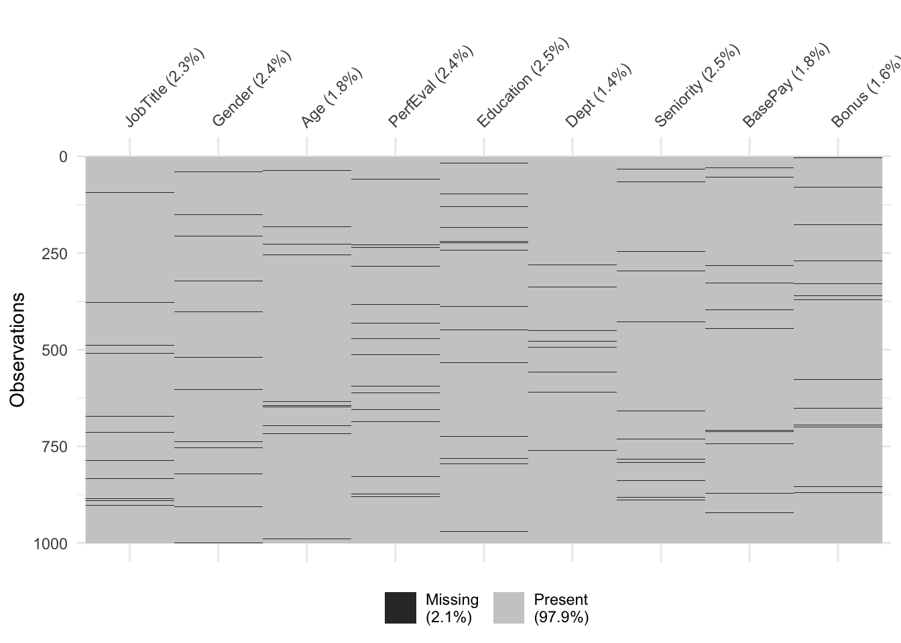
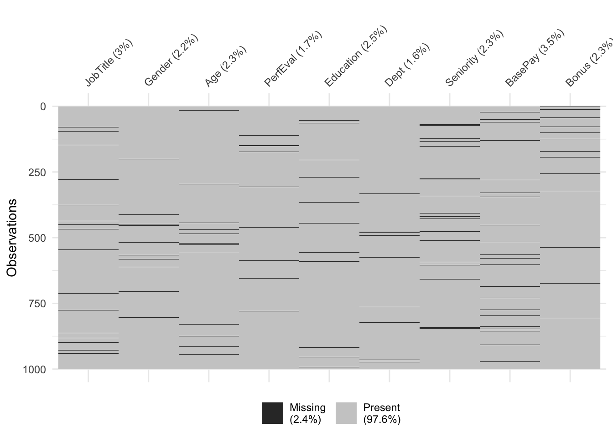
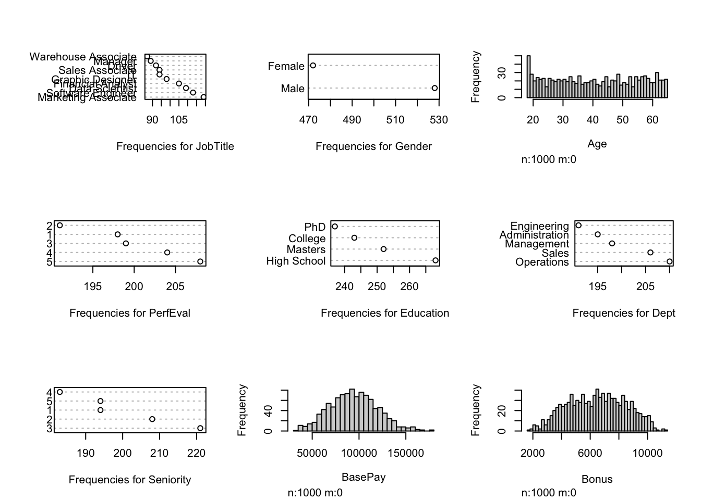

Chapter 3 Methods
- Visualization of the original dataset:

3.1 Generating Missing Values
Before we perform the different methods of imputation for missing values we must first explore the types of missing data. These are: MCAR, MAR, MNAR.
MCAR (Missing Completely at Random) is the data missing where data points are not related to each other and probability of missing data is equal for every data point. This allows data to be unbiased and can use methods such as complete case analysis, single, and multiple imputation for valid analysis.
MAR (Missing at Random) is the likelihood of a value to be missing depends on other observed variables. This leaves a bias in our dataset and for this data type multiple imputation is a valid analysis.
MNAR (Missing Not at Random) is unequal and unknown probability to be missing for a dataset. Not only is the data missing but we cannot categorize data properly or know what data we do not have. For this data type, sensitivity analysis should be used.
Once missing value data type is determined some of the strategies are complete case analysis, single imputation, and multiple imputation.
Complete case analysis drops observations with missing values from the dataset. Single imputation replaces missing values with values thought to best represent the mechanism of the missing data such as mean or median.
Multiple imputation has several steps which summarize as imputation of multiple copies of original dataset are generated, replace missing values randomly sampled from the predictive distribution, fit models for each imputed dataset and perform statistical analysis on said datasets followed by pooling the results together. The result will contain the variability and uncertainty as if taken from a complete dataset without missing data and without introduction of bias.
Due to the challenge of missing data having many assumptions, decisions, and methods used for analysis, it is extremely important to thoroughly report each. Reporting the strategy used for missing data is critical for other researchers to reproduce and validate findings. Report findings such as count or proportion of missing values to variable of interest, methodology used for incomplete data analysis, assumptions regarding the cause of missingness: MCAR, MAR, or MNAR, software used to handle missing data, changes made, etc.
It is important to understand why and how to handle missing data. While multiple imputation is a preferred method to handle missing data in general, we still need to know when, why, and how. Detailed reporting is also needed to ensure reproducibility and validity.
Methods and ideas discussed will help deal with missing data in scientific research but should be considered as an introduction to the topic. This report will be focused on single and multiple imputation methods.
Generated NA’s for MCAR Type
## Warning: `gather_()` was deprecated in tidyr 1.2.0.
## ℹ Please use `gather()` instead.
## ℹ The deprecated feature was likely used in the visdat package.
## Please report the issue at <]8;;https://github.com/ropensci/visdat/issueshttps://github.com/ropensci/visdat/issues]8;;>.
Generated NA’s for MAR Type
Generated NA’s for MNAR Type 
3.2 Single Imputation
3.2.1 Most Frequent for Categorical
The next imputation method that was performed is another form of single imputation which is most frequent imputation. This method is used for categorical variables and is considered another quick and simple approach for missing values. This method replaces missing values with the most frequent value (mode) of the variable, with zeros or a constant pre-defined value. Even though this is a very easy approach, this method also does not factor correlations between variables and can introduce bias to the dataset.
3.2.2 Mean for Continuous
The first imputation method performed will be single imputation but for continuous variables. This method consists of replacing the missing values with either the mean or median for continuous variables. This method is a very quick and simple approach when dealing with missing values. However, it does not factor correlations between variables and does not work for categorical variables.
3.3 kNN Imputation
KNN was the next imputation method performed. This method makes predictions about missing values by finding the K’s closest neighbors and impute the value based on the neighborhood. The procedure of the algorithm consists of creating a basic mean impute to construct a KDTree. The KDTree is used to compute the nearest neighbor and then it finds the average of KNN’s. This method has the advantage of being more accurate, but it is computationally expensive and is very sensitive to outliers.
3.4 Random Forest Imputation
The next method used is Random Forest. This package used (missForest) is an iterative imputation method based on a random forest allows quality and flexibility utilizing built-in out-of-bag error estimates. This non parametric alternative is also used on mixed types of data with ability to account for high-dimensions and different types of variables simultaneously.
3.5 Mice Imputatuion
The last method used is MICE (Multivariate Imputation by Chained Equations). This method involves filling the missing values multiple times until a certain threshold is met. An important assumption of the MICE method is that it assumes that the missing data is Missing At Random (MAR). This means that the probability that a value is missing depends only on observed values and not on unobserved values. A drawback of this method is that when the data is not MAR could result in biased estimates. By default, linear regression is used to predict continuous missing values. Logistic regression is used for categorical missing values. While this method offers advantages over other methods, a primary disadvantage is that it does not have the same theoretical justification as other techniques.
- Visualization after performing KNN to the original dataset: 